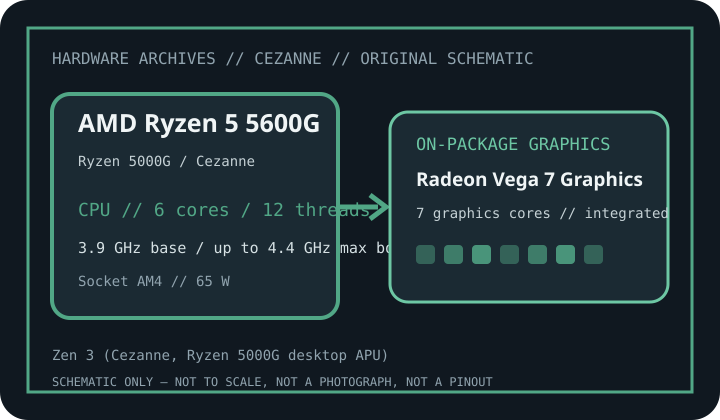

[ INDIVIDUAL DESKTOP APU // RYZEN 5000G / CEZANNE ]
AMD Ryzen 5 5600G
Zen 3 (Cezanne, Ryzen 5000G desktop APU); 6 cores / 12 threads, 3.9 GHz base / up to 4.4 GHz max boost; Radeon Vega 7 Graphics, 7 graphics cores, up to 1,900 MHz; 65 W default TDP. Verify the exact package, BIOS and board support list before installation.

MODEL IDENTIFICATION: AMD Ryzen 5 5600G. Confirm full marking, suffix and OEM status against the physical processor; family name or socket alone does not establish board compatibility.
Recorded specifications
| Exact SKU / launch era | AMD Ryzen 5 5600G (2021) |
|---|---|
| Architecture / family | Zen 3 (Cezanne, Ryzen 5000G desktop APU) |
| Cores / threads | 6 cores / 12 threads |
| Base / maximum boost | 3.9 GHz base / up to 4.4 GHz max boost |
| Cache | 3 MB L2 + 16 MB L3 |
| Socket / package | Socket AM4 |
| Integrated graphics | Radeon Vega 7 Graphics, 7 graphics cores, up to 1,900 MHz |
| Default TDP | 65 W |
| Memory support | Dual-channel DDR4, up to 3200 MT/s; supported speed depends on DIMM population and board firmware. |
| PCI Express | PCI Express 3.0; usable graphics/storage lanes and slot routing are board-specific. |
| Motherboard / BIOS compatibility | AM4 motherboard with a vendor CPU support list that names Ryzen 5 5600G / Cezanne and the installed minimum BIOS. Support varies across 300/400/500-series boards; AM4 alone is not proof of compatibility. |
Platform and service notes
- Socket: Socket AM4. A matching socket is necessary but not sufficient; board wiring, firmware, power delivery and OEM policy still govern compatibility.
- Firmware: AM4 motherboard with a vendor CPU support list that names Ryzen 5 5600G / Cezanne and the installed minimum BIOS. Support varies across 300/400/500-series boards; AM4 alone is not proof of compatibility. Always consult the board maker’s CPU support list for the exact board model/revision and BIOS version. Do not assume the installed BIOS can be upgraded with this CPU fitted.
- Memory: Dual-channel DDR4, up to 3200 MT/s; supported speed depends on DIMM population and board firmware. Integrated GPU performance and stability depend on dual-channel memory configuration; check the board QVL and processor limits.
- Expansion: PCI Express 3.0; usable graphics/storage lanes and slot routing are board-specific. Check board documentation for actual M.2/SATA sharing, slot electrical width and device-generation negotiation.
- Do not infer discrete graphics outputs, display resolution or multi-monitor support from the GPU name alone; display connectors, firmware settings and board capability vary.
AMD manufacturer specification sources
- AMD product page — AMD Ryzen 5 5600GModel-specific manufacturer product page for identification and published technical specifications.
- AMD processor specifications databaseManufacturer specification catalog; select this exact model and compare the supported limits and graphics fields.
- AMD support and documentationAMD support entry point. For motherboard BIOS applicability, the board vendor’s exact CPU support list and release notes are controlling.